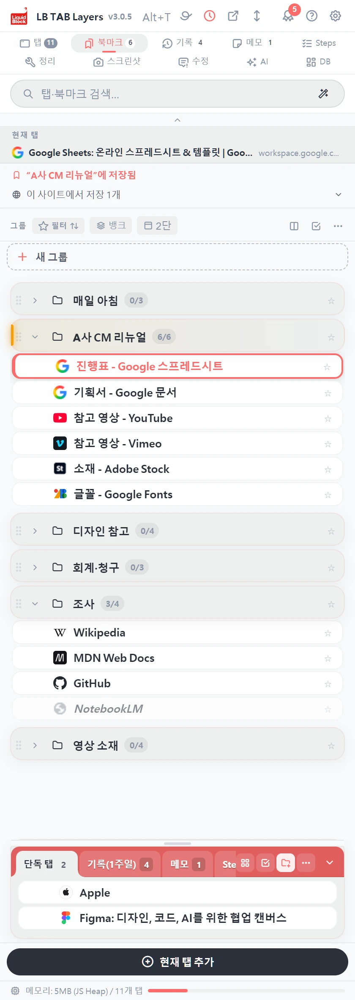
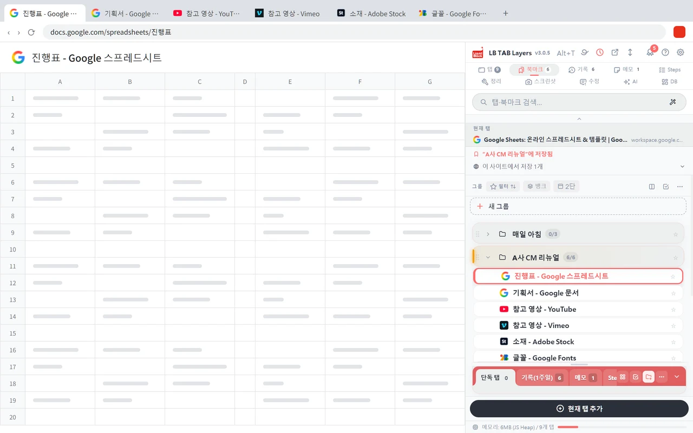
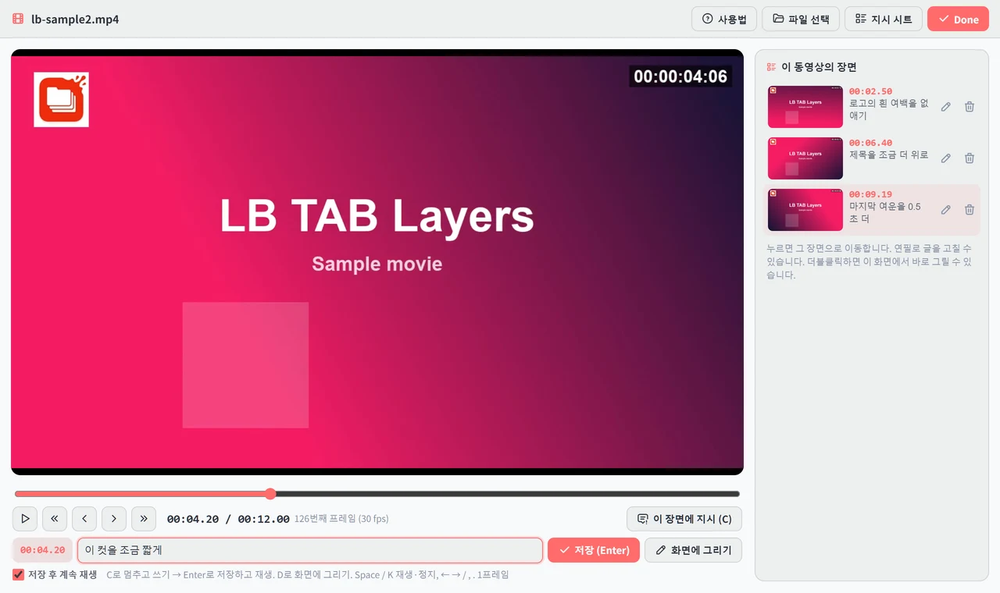
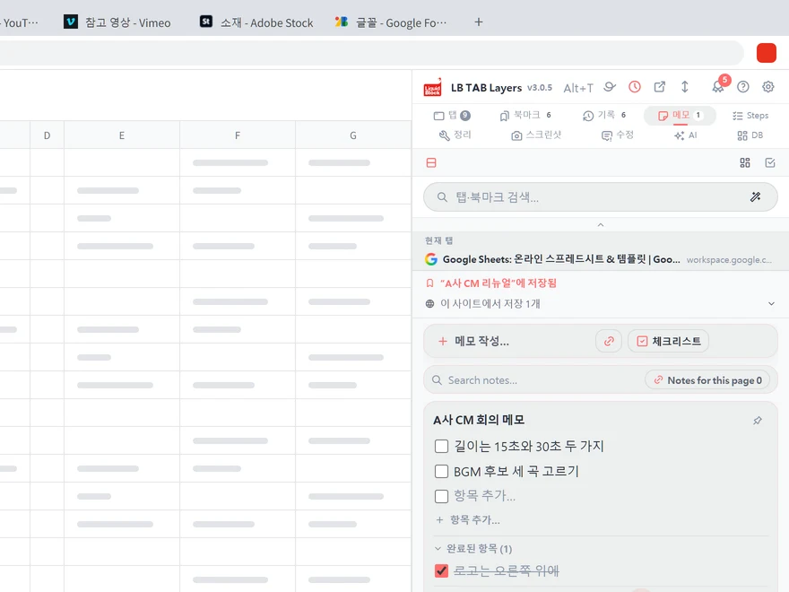
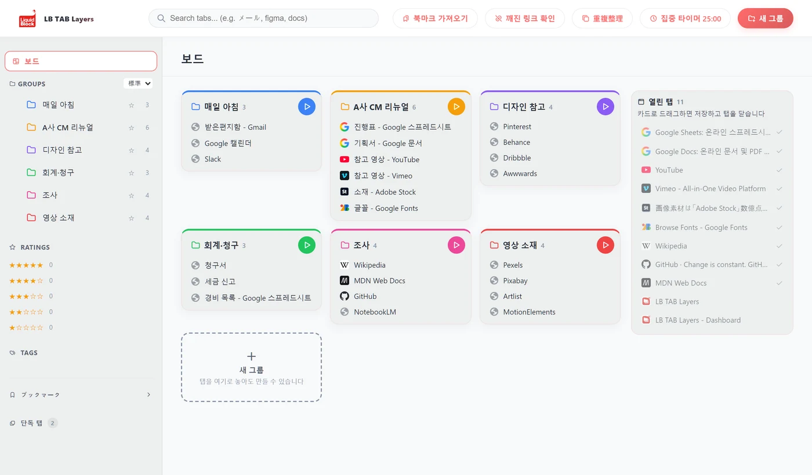

그 페이지,
어디 있더라.
- 계속 열어 둔다닫으면 다시 못 찾을 것 같아서, 닫지 못합니다.
- 찾아 헤맨다탭의 바다에서 매일 5분, 10분.
- 전부 사라진다느려져서 재시작했더니, 탭이 없습니다.
손은 움직이는데, 일은 나아가지 않습니다.
그런 시간을 없애 드립니다.
북마크와 탭을 한 화면에서 함께 관리합니다.
탭은 '지금'. 북마크는 '서랍'.
업무 탭을 프로젝트별로 넣어 두고, 한꺼번에 엽니다.
Alt+T로 언제든 열 수 있습니다.

손은 움직이는데, 일은 나아가지 않습니다.
그런 시간을 없애 드립니다.
나중에 쓸 것은 서랍으로.
할 일과, 간직해 둘 것.
나누기만 해도 머리가 가벼워집니다.

끝난 탭을 한꺼번에 닫습니다.
프로젝트의 탭을 한꺼번에 엽니다.
몇 글자만 입력하면, 그 페이지가 나옵니다.

브라우저 옆에 언제나 같은 화면.
위에는 북마크, 아래에는 지금의 탭.
왔다 갔다 하지 않아도 전부 보입니다.
Alt+T를 누르면 어느 페이지에서든 열립니다.

넣어 두는 곳은 Chrome 북마크입니다.
그래서 안심하고 닫을 수 있습니다.
한 번은 몇십 초. 하지만 매일 수십 번씩 하고 있습니다.
아낀 시간은 생각하는 데 써 주세요.

동영상을 다시 올리지 않아도, 브라우저에서 보고 있는 그 동영상에 적을 수 있습니다. YouTube, Vimeo, Google Drive, 웹 페이지에 삽입된 동영상.
영상을 만드는 회사가, 자신들의 수정 작업을 위해 만들었습니다.
처음에는 탭과 북마크만으로 충분합니다.
필요해지면, 바로 옆에 있습니다.


쓸수록 메달이 쌓입니다. 처음 해 보는 조작에는 작은 축하도 있습니다.
설치하면 바로 쓸 수 있습니다.
저장되는 곳은 당신의 Chrome 북마크입니다.
무료로 시작하고, 마음에 들면 한 번 구매로.

Liquid Block은 영상과 모션 그래픽을 만드는 회사입니다. 기획서 자료, 온라인 도구, 수많은 AI. 제작 현장은 탭으로 넘쳐납니다.
찾고, 다시 열고, 다시 만들고. 그런 작업에 생각하는 시간을 빼앗기고 싶지 않아서, 우리 자신을 위해 만들었습니다.
네. 저장, 검색, 한꺼번에 열기·닫기는 무료로 쓸 수 있습니다. 처음 3개월은 모든 기능을 써 볼 수 있습니다. PRO는 한 번만 구매하면 되고, 월정액은 없습니다.
그대로 쓸 수 있습니다. Chrome 북마크를 그대로 가져와서 정리할 수 있습니다.
저장한 탭은 Chrome 북마크로 남습니다. 테마나 색상 같은 설정은 사라집니다.
Google Chrome(114 이상)에서 쓸 수 있습니다. Windows·Mac·Linux·ChromeOS를 지원합니다. Edge 버전은 준비 중입니다.